结论：弱势延续，不动为上。上证 3634.35（-0.59%），盘中新低 3623.84 破 11/12 低 3647.44，3750 仍差 2.2% 未触；创业板 -3.32%、科创50 -2.30%。成交 16,671 亿（同比 -14.3%），4748 家下跌、跌停 33 家（昨 5）。温度 25 度，一类无、二类仅人形机器人。总仓 ≤4 成、不追涨；12 只标的依旧全无买点，亮的只有银行、电力。
老师说 15 分钟下跌中枢延伸、方向未选：向上要破 3750 后回抽确认三买，向下要创新低出底背驰。按日线触达口径——向上今日最高 3669.44，距 3750 差 80.56 点（2.2%），门槛根本没摸到；向下最低 3623.84 已破 11/12 低 3647.44、11/11 低 3650.31，「创新低」条件成立，接下来只看底背驰是否出现。
高开 3658.72 一路走低收 3634.35，收在全天低位区；创业板 -3.32% 收 2426.08，距 60 日低 2376.28 只剩 2.1%。缩量 -14.3% 却砸出 33 家跌停、81 家跌超 9.9% —— 这不是「沉闷」，是杀跌，人气差的定性成立且更重。
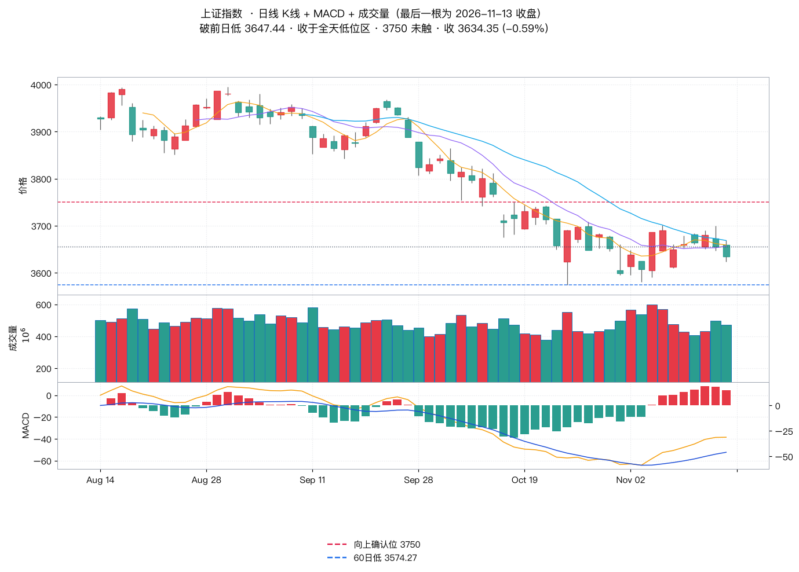
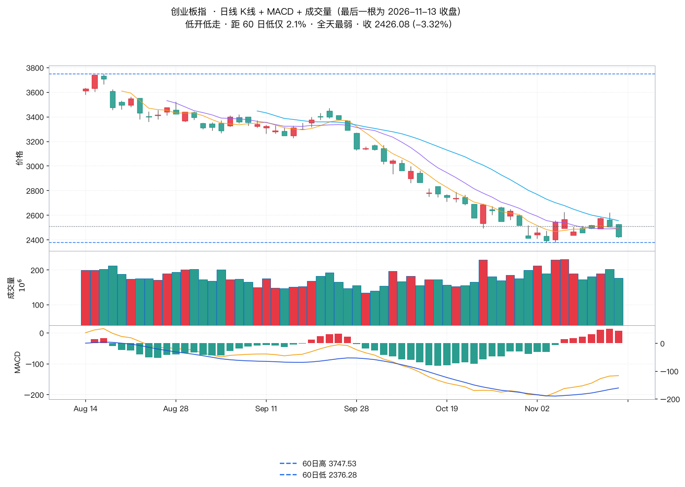
| 方向（自建篮子） | 老师口径 | 实测（均值、涨跌家数、内部） |
|---|---|---|
| 银行 | 老师：今日创出新高，适度关注 | +1.23%，5 只样本全红；个股最高价均未破 60 日高（工行 8.86 vs 8.88） |
| 电力/高股息 | 老师：类似电力方向也可观察 | +0.95%，5 只样本全红，与银行同步，红利是当日唯一成体系的方向 |
| 人形机器人 | 老师：二类热点，内部个股分化 | -0.12%，3 涨 6 跌；模塑触板 +6.54%，鸣志 -1.97%、兆威 -2.69% |
| AI视频/传媒 | 老师：能否存活待观察 | -0.17%，2 涨 5 跌；光线 +5.31% 创 60 日新高，中文在线 +2.21%，上海电影 -2.25% |
| 半导体 | 老师：回落不意外，上方压力没消化 | -1.23%，2 涨 4 跌；兆易 -4.96% 领跌，寒武纪 +0.60%、海光 +0.46% |
| 算力/CPO | 老师本期未提 | -9.04%，0 涨 5 跌；沪电 -10.00%、胜宏 -10.57% 双跌停，当日最大杀跌源 |
| 玄学链·东方字样 | 老师：跌幅较大，掉下热点榜、走势垮掉 | -1.49%，2 涨 4 跌；东方中科涨停 +9.98%，东方通信 -7.39%、东方创业 -7.37% |
三条要记的：① 红的只有银行、电力，且是缩量下的防守抱团 —— 老师「高股息适度关注、不追买、结合回调找止跌」的分寸正好；② 算力/CPO -9.04% 是当日真正的杀跌源（沪电、胜宏双跌停），老师仅说半导体回落、没点算力，这是遗漏；③ 人形机器人 -0.12% 的均值掩盖了分化：模塑触板、鸣志兆威下跌，正对应老师「板块内个股分化、别着急追买」。
| 标的 / 题材 | 收盘 | 老师定性（老师口径） | 关键位 | 实测印证（日线触达） | 动作 |
|---|---|---|---|---|---|
| 药明康德 | 146.30 (-2.69%) | 无买点 · 窄幅震荡 · 等充分震荡后破 157.8 出 15 分钟三买 | 157.8 | 最高 150.38，差 7.42（4.9%） | 等 |
| 中国船舶 | 34.11 (-0.26%) | 无买点 · 15 分钟下跌中枢延伸 · 未止跌，等翻压力后类二买共振 | — | 最低 33.80 再破 11/12 低 33.92，结构未修 | 观察 |
| 瑞芯微 | 217.80 (-1.32%) | 无买点 · 日线前高顶在上沿不追 · 激进等中枢下沿止跌＋日线有力底分型 | 前高 237.37 | 最高 228.00，差 9.37，未破前高 | 不追 |
| 伊利股份 | 31.74 (+2.39%) | 无买点 · 逆势创新高但位置不一定拿得住，不建议追涨 | 60日高 31.75 | 最高 31.75 = 60 日新高，量 1.35 倍 | 不追 |
| 中文在线 | 27.73 (+2.21%) | 无买点 · 复杂震荡不抓回调 · 稳健等破 30.38 出三买 | 30.38 | 最高 28.77，差 1.61 | 等 |
| 海天瑞声 | 114.00 (-8.73%) | 无买点 · 月线中枢略跌破 · 热度好＋个股止跌再谈 | — | 最低 112.24，破 11/12 低 121.31 | 等 |
| 奥普特 | 149.00 (-1.75%) | 无买点 · 日线顶分型回调至下沿附近 · 破 186.8 三买 | 186.8 / 下沿 140 | 最低 148.36，距 140 还差 6.0% | 等 |
| 柯力传感 | 54.21 (-0.90%) | 无买点 · 短线调整缩量 · 等止跌＋日线有力底分型 | 53 | 最低 53.81，未破 53 | 等 |
| 兆易创新 | 246.02 (-4.96%) | 无买点 · 短线下跌延续 · 观察创新低后底背驰 | 前低 237.28 | 最低 244.58，差 7.30 未创新低 | 等 |
| 云铝股份 | 23.04 (-1.16%) | 走势略破位 · 老师直接剔除跟踪 | — | 最低 22.95 = 60 日新低 | 剔除 |
| 模塑科技 | 16.61 (+6.54%) | 无买点 · 盘中涨停不追 · 等回调 14.95 止跌或破 17.69 三买 | 14.95 / 17.69 | 最高 17.15 = 涨停价（触板未封），量 1.36 倍 | 不追 |
| 长盈精密 | 28.34 (-0.81%) | 无买点 · 类二买雏形 · 稳健等破 32.08 出三买 | 32.08 | 最高 29.66，差 2.42 | 等 |
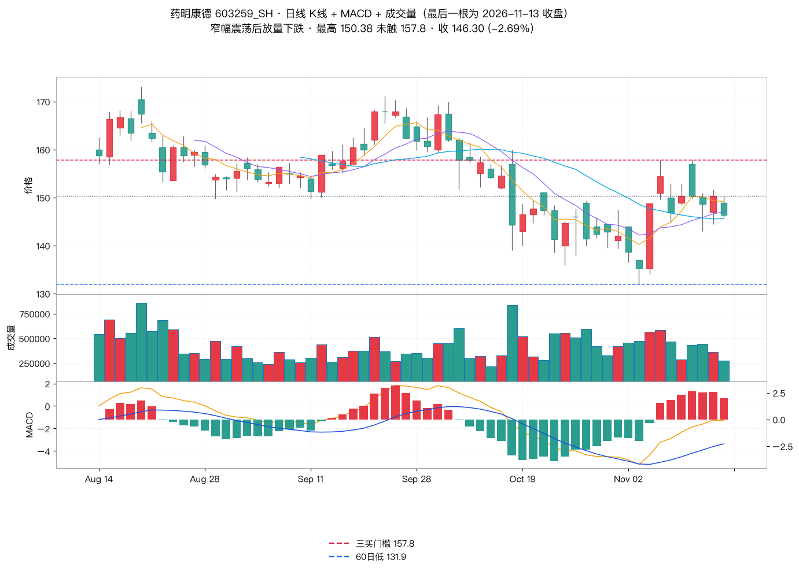
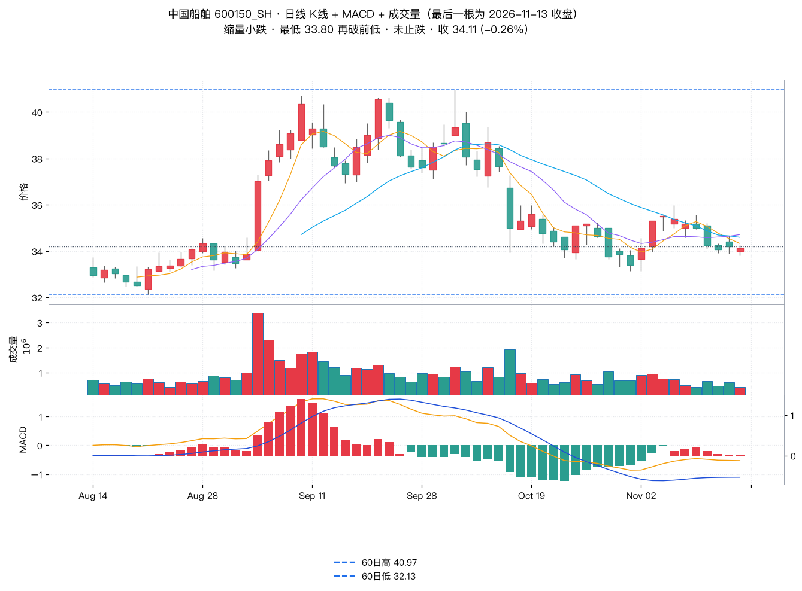
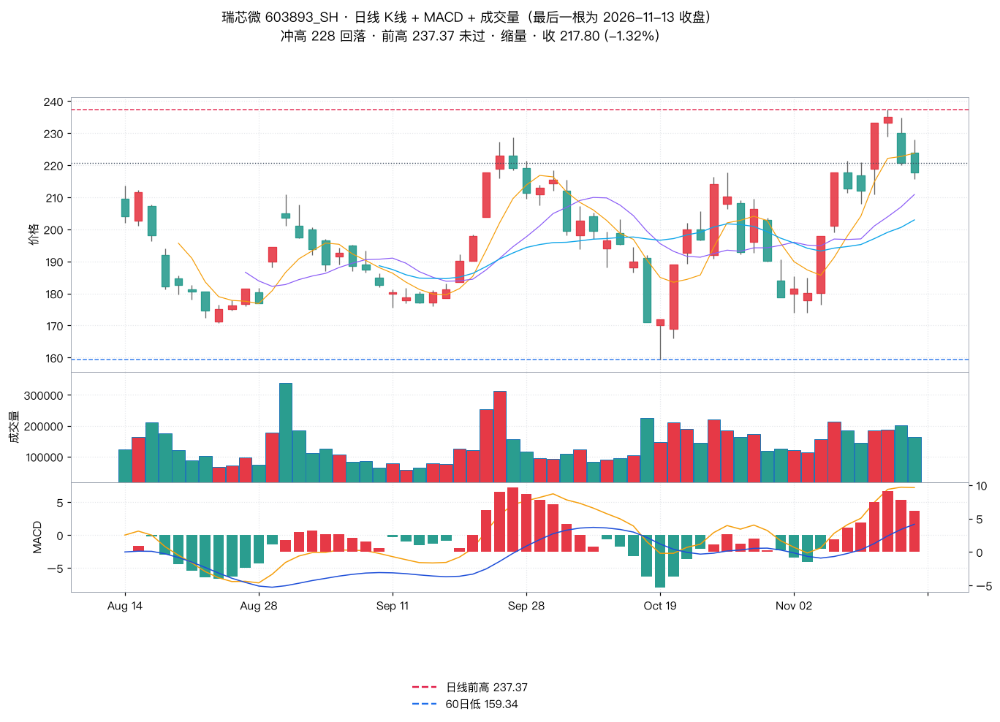
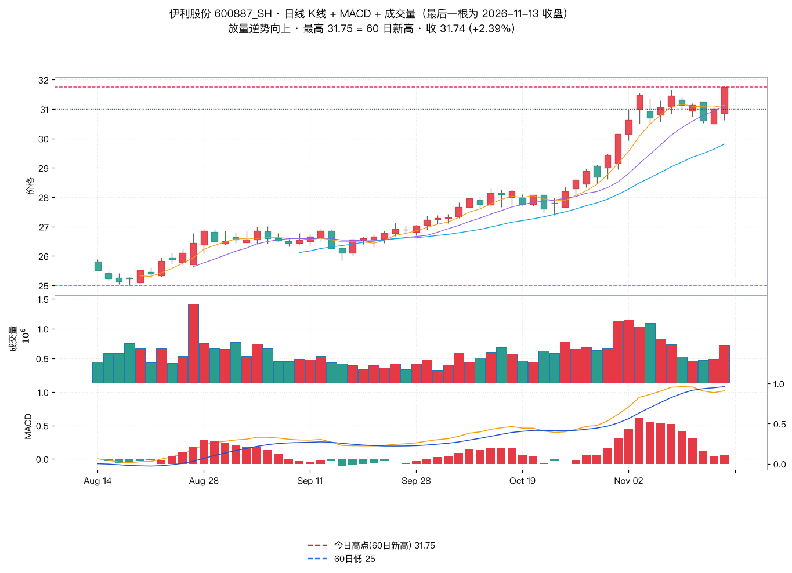
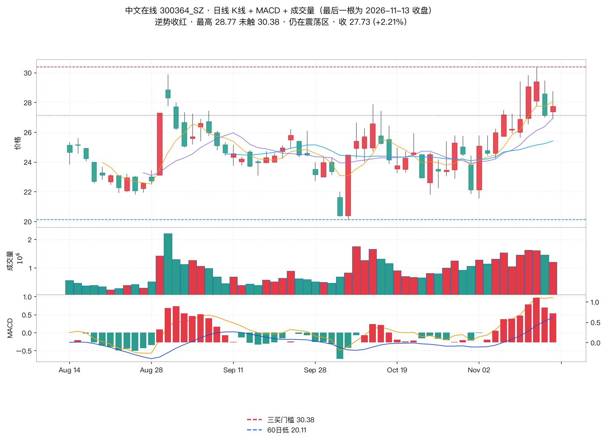
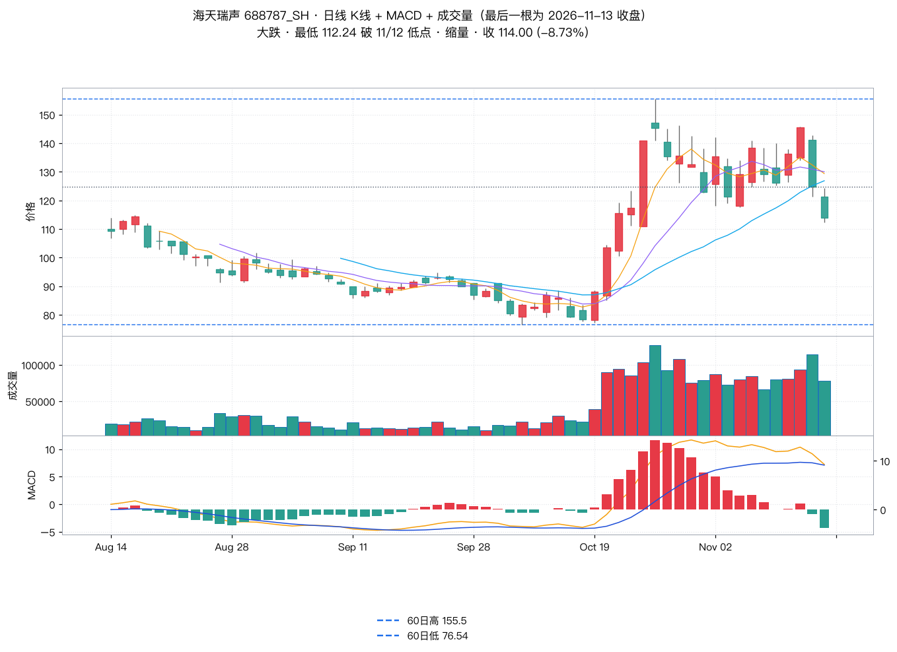
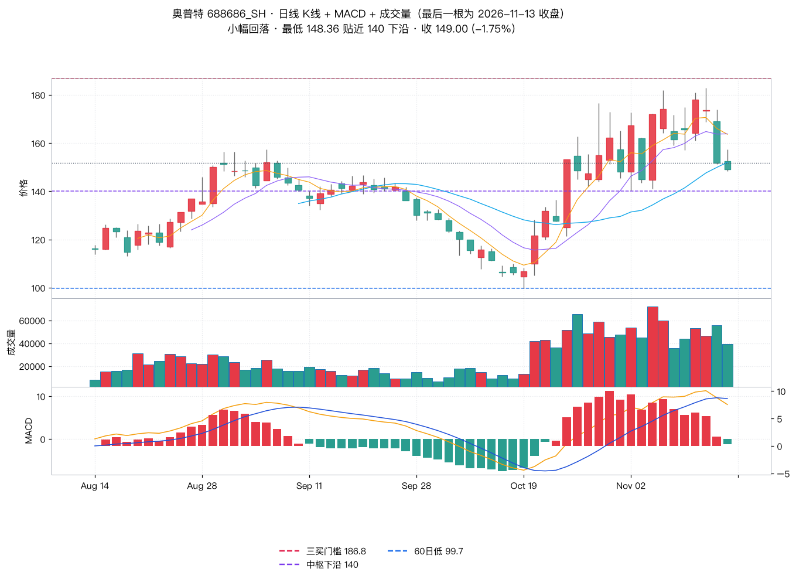
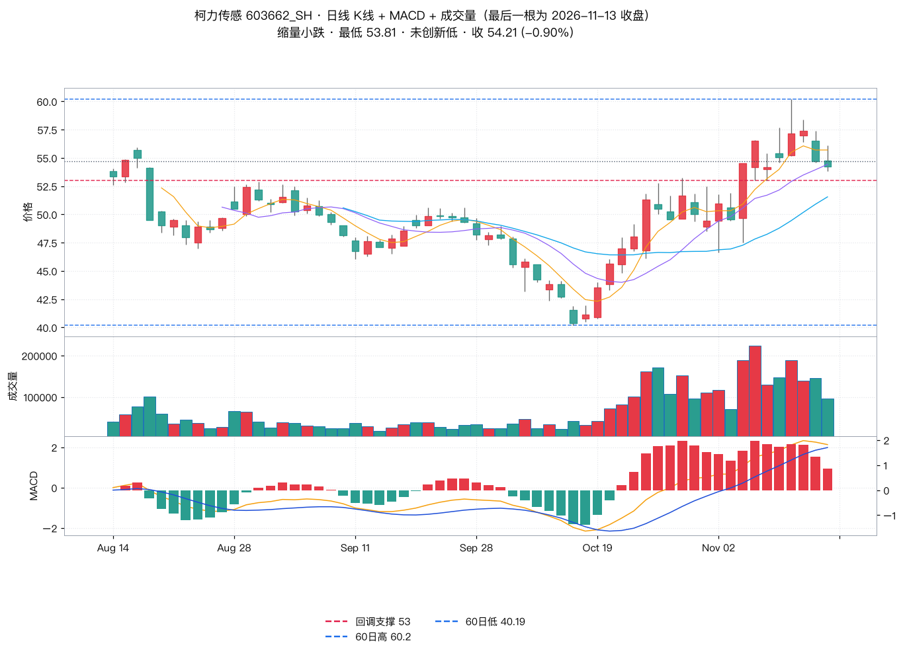
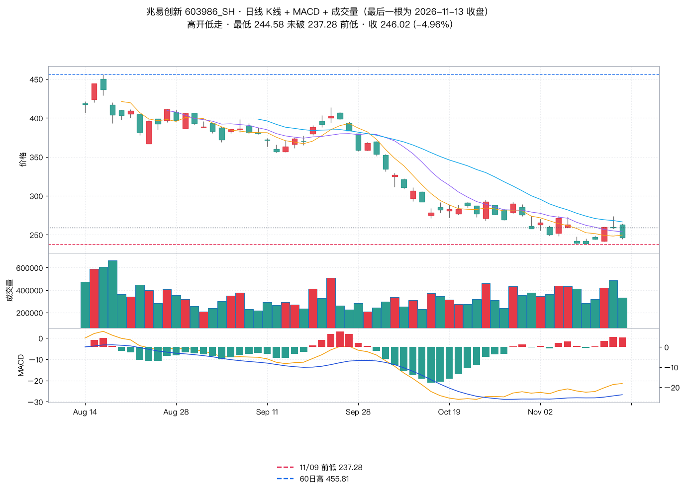
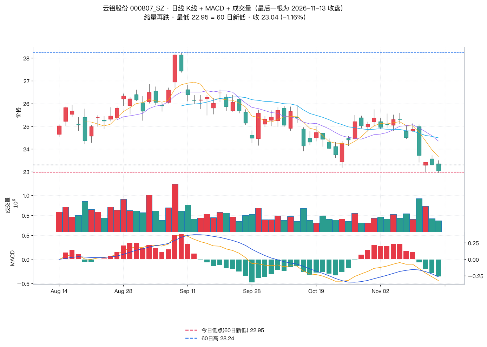
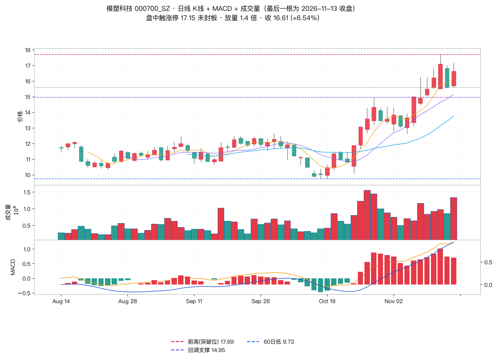
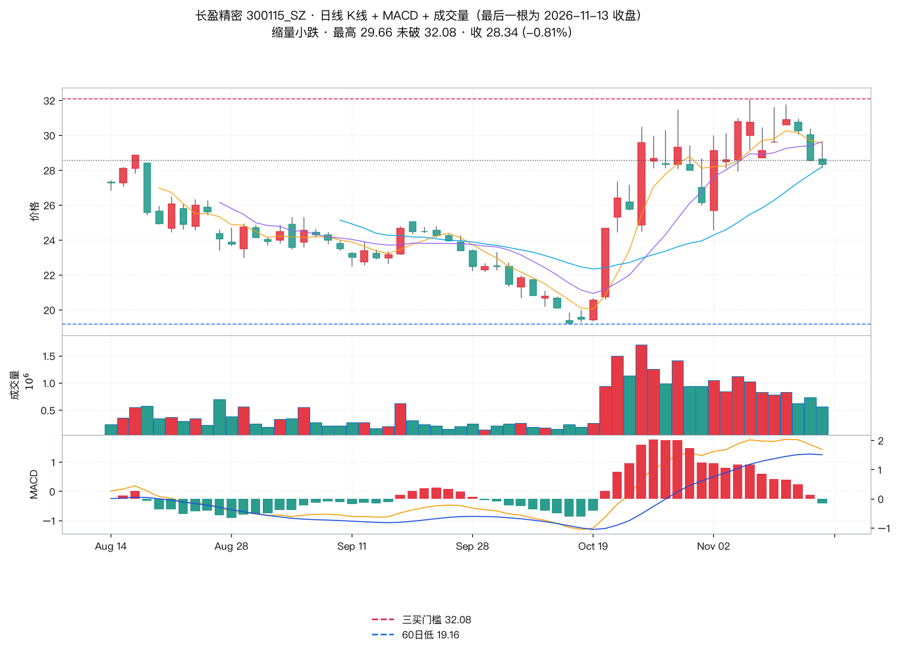
| 老师原文 | 实测 | 判定 |
|---|---|---|
| 「银行板块今日创出新高」 | 5 只成分最高价均未破 60 日高，工行 8.86 vs 8.88（差 0.02） | 个股价无法复现 |
| 「玄学链走势垮掉」 | 样本 2 涨 4 跌、均值 -1.49%，但东方中科涨停 +9.98% | 方向对、内部分化 |
| 板块只提半导体回落、未提算力 | 算力/CPO -9.04%（0/5），沪电、胜宏双跌停 | 遗漏最大跌幅源 |
| 「市场运行沉闷」 | 缩量 -14.3% 成立，但跌停 33 家（昨 5） | 是杀跌非横盘 |
| 「15 分钟下跌中枢延伸」 | 无分钟级数据（用户禁令），不做复算 | 按老师口径引用 |
来源：都业华《高级班》2026-11-13 收评，执业编号 A0400626100004。仅供参考，不作为买卖依据，据此操作风险自担。投资有风险，入市需谨慎！
口径：东财日线（前复权）＋ Tushare 全 A 快照；板块为自建篮子均值（成分股逐一在表内列出）；涨跌停用东财池（不含 ST／北交所），「跌超 9.9%」为 Tushare 全 A 统计；缠论定性按老师口径，不声称我方复算过 15 分钟结构。